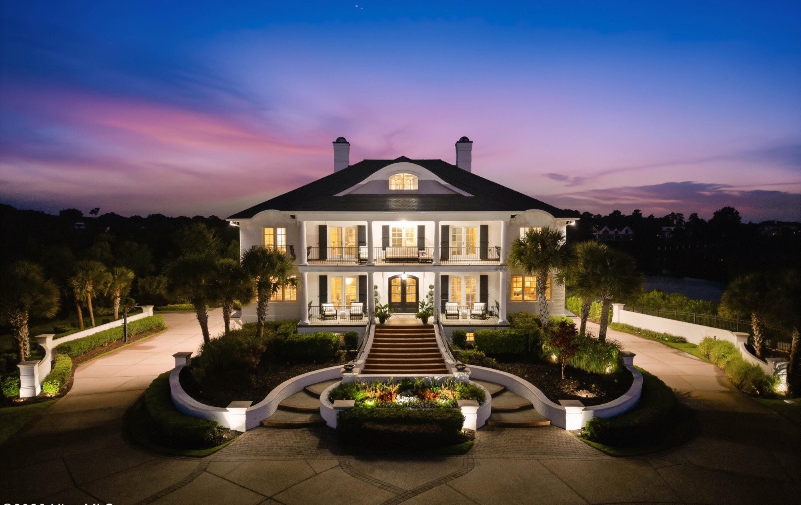
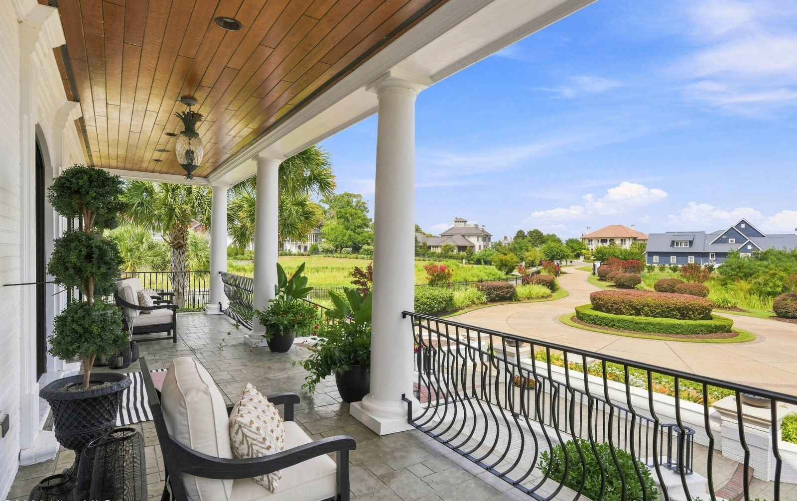
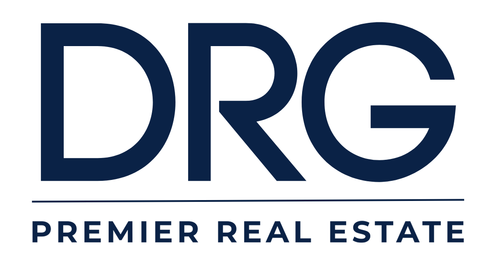
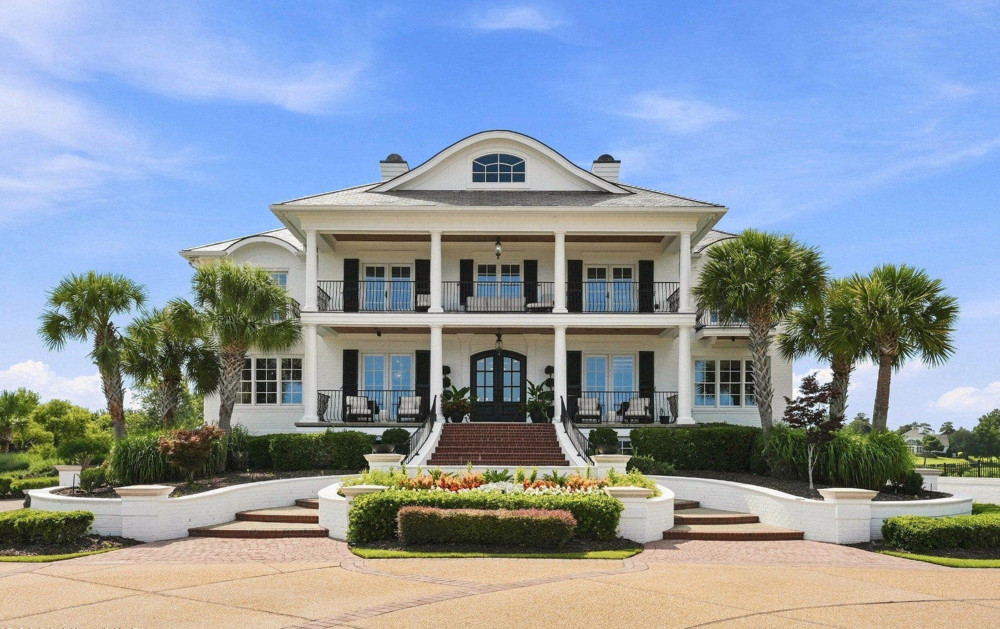
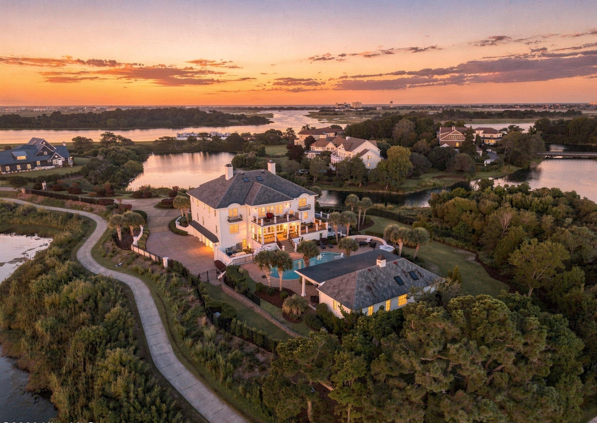
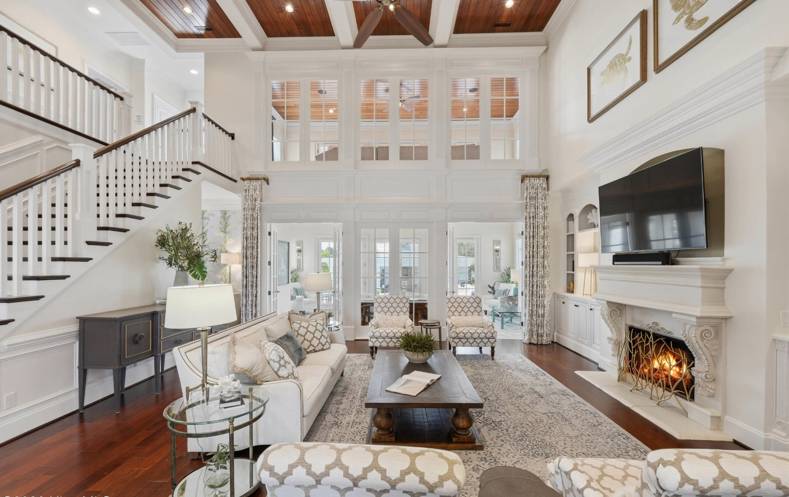
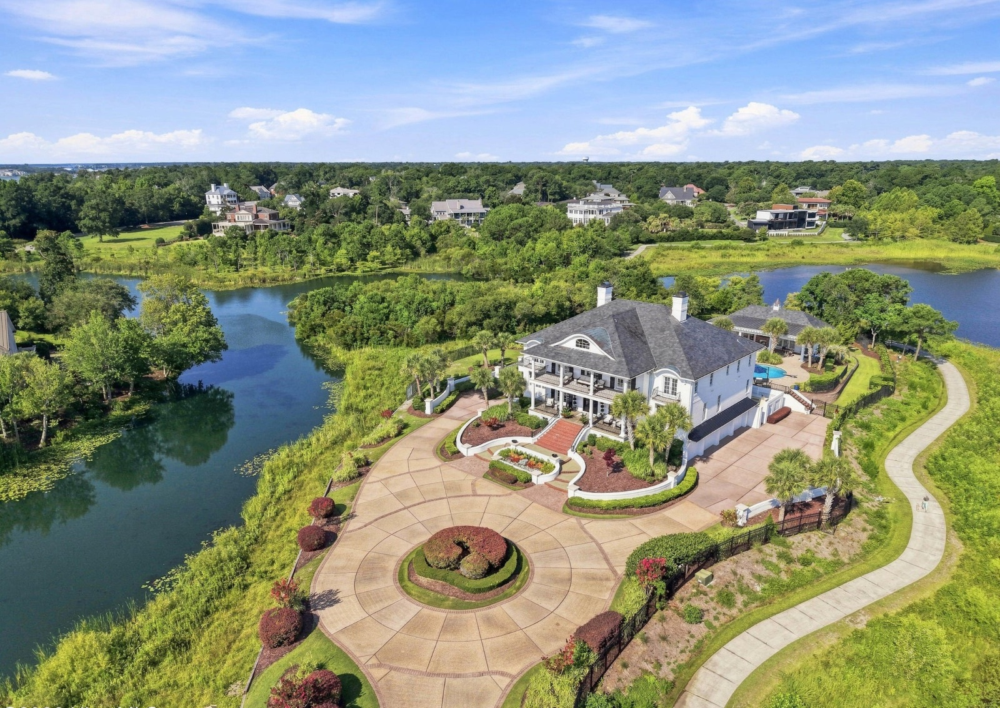
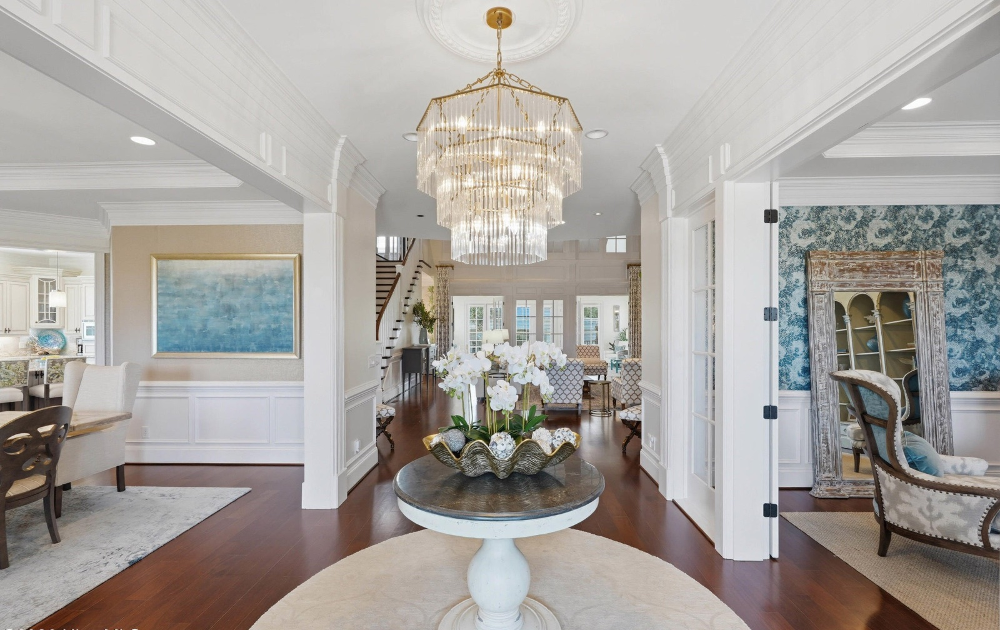
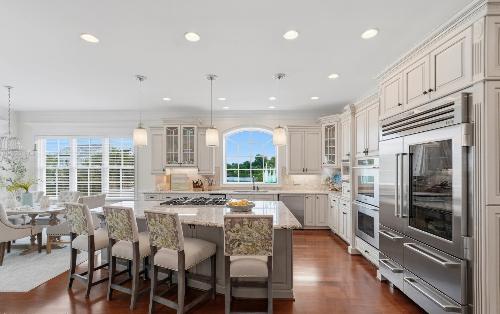

What's inside
Twelve pages covering how DRG presents itself — how we talk about the work, how the identity is built, and how the photography that sells these homes gets made and used.
We sell the best homes on this coast
DRG represents high-end waterfront and luxury residential property in coastal North Carolina. The work is local, relationship-driven and unhurried — we would rather earn one listing properly than chase ten.
Everything in this guide exists to make the brand look like what the homes already are: considered, warm, and expensive without shouting about it.
- Local and specific
- Warm, plainspoken
- Patient with sellers
- Precise about numbers
- Quietly premium
- A volume shop
- Hype or urgency-driven
- Corporate or scripted
- Vague about value
- Loud about luxury

Write the way you'd talk to a neighbor
Clear, specific, unhurried. No exclamation marks, no superlatives we can't prove, no jargon a seller would have to decode.
- Lead with the fact, not the adjective
- Short sentences beat clever ones
- Name the street, the number, the day
- Ask questions; don't pitch
- Never manufacture urgency
"Stunning, one-of-a-kind luxury estate — a rare opportunity you won't want to miss!"
"We leverage cutting-edge marketing solutions to maximize your home's exposure."
"Act now — homes like this don't last!"
"Six bedrooms on two acres of lakefront, with a dock and a pool. Built in 2006, renovated last year."
"Photography, video and a marketing plan, ready to launch in about a week."
"A home just sold on your street. Here's what it means for yours."
One lockup, three colorways
The full lockup carries the name and the line beneath it. The monogram stands in only where the lockup would fall below legible size.

Slate teal, dune, linen
A deeper, warmer coast than navy. Teal carries the weight, dune does the accenting, and linen is the ground almost everything sits on.
Cormorant, Archivo, and a mono for labels
Cormorant Garamond sets every headline in uppercase. Archivo carries all body copy and interface text. JetBrains Mono appears only as tracked-out labels and numbers.
- Headlines uppercase, tracking near zero, line height 1.0–1.05
- Body sentence case, line height 1.45–1.5, measure under 65 characters
- Labels uppercase with 0.2em tracking, never below 8pt in print
- Never set Cormorant below 20px — it thins out and loses the serif
- One weight of Archivo per block; 500 for emphasis, never bold headlines
- No italics except Cormorant, and only for a pull quote
Photograph the light, not the room
Every listing is sold twice: once in person, once in a photograph. Three qualities run through every DRG image worth using.

Show the house

Show the life

Show the space

Show the water
Book the shoot around the sun
Signature
- Exterior hero, front and rear
- Full interior walk
- One golden-hour frame
- 20–25 edited stills
- Aerial if it touches water
Premier
- Everything in Signature
- Dedicated golden-hour session
- Aerial set — two top-down, four oblique
- Twilight exterior, lights on
- 35+ stills, plus walkthrough video
Use the crops you were sent


- Verticals parallel to the frame
- Natural white balance
- Sky keeps cloud detail
- Real colors in grass and water
- Furniture out of place
- HDR halos, plastic skies
- Replaced skies, heavy filters
- Watermarks across the image
Where this shows up
The system was built on real pieces. These are the ones already in circulation — match them rather than inventing a new layout.